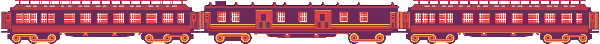
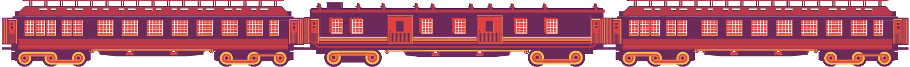

Journey To Caïro
I vividly recall the disbelief that nearly overwhelmed me. There we stood, on the enchanting platform of Gare de Lyon in Paris. At that time, I was a young Parisian governess, employed by a wealthy businessman who had to travel to Cairo for a while. And I was to accompany him! It was 9 o'clock in the evening, and within half an hour, the train would depart. From Paris all the way to Cairo in just 6 days! A mixture of fear and excitement engulfed me.


Since 1889, one could travel from Paris to Istanbul in just 3 nights twice a week. In 1906, the Simplon Tunnel opened, cutting through the Alps, allowing the train to smoothly journey from Switzerland to Italy. It seemed almost unimaginable at the time.


In the year 1930, we witnessed the heyday of the Simplon Orient-Express. Behind me, two gentlemen enthusiastically discussed the adventure that lay ahead. Although the train originated in Europe, the first sleeper trains were introduced in America. The ingenious Belgian engineer Georges Nagelmackers brought them to Europe, making them more luxurious than ever by founding the Compagnie Internationale des Wagons-Lits.
Found out which route
Orient Express took.
Choose a final destination on one of the buttons and discover the route the Orient Express did.
Found out which route
Orient Express took.
Choose a final destination on one of the buttons and discover the route the Orient Express did.
Embarking a journey
of discovery
The platform was bustling, making it all the more intriguing. Even with the most vivid imagination, one could not fathom the diverse group of people gathering! Diplomats and statesmen, stars and aristocrats, artists and writers, even Eastern traders and Indian Maharajas heading home.
Our luggage was carefully loaded into baggage cars, and an attendant led us to our compartments. Ready to depart! First stop: Dijon, then Lausanne, Milan, Venice, Trieste, Zagreb, Belgrade, and Sofia, finally arriving in Istanbul. There, we enjoyed an overnight stay at the Pera Palace Hotel, built by Georges Nagelmackers' Compagnie Internationale des Grands Hôtels.

Embarking a journey
of discovery
The platform was bustling, making it all the more intriguing. Even with the most vivid imagination, one could not fathom the diverse group of people gathering! Diplomats and statesmen, stars and aristocrats, artists and writers, even Eastern traders and Indian Maharajas heading home.
Our luggage was carefully loaded into baggage cars, and an attendant led us to our compartments. Ready to depart! First stop: Dijon, then Lausanne, Milan, Venice, Trieste, Zagreb, Belgrade, and Sofia, finally arriving in Istanbul. There, we enjoyed an overnight stay at the Pera Palace Hotel, built by Georges Nagelmackers' Compagnie Internationale des Grands Hôtels.
Unparalleled luxury
As a governess, I had seen my share of luxury, but this was unparalleled.The attention to detail was trulyastonishing. I shared a compartment with the daughter, while mother and father had their own spaces. Two beds stacked, a personal sink, and walls adorned with exquisite marquetry. Crisp linens and woolen blankets adorned the beds, and we even had a button to summon the butler!
Dicover for each wagon what kind of luxury there is
The train consisted of 5 sleeping cars, a dining car, and two baggage cars. No lounge
swipe here to the left


Trough 7 countries

The journey from Paris to Istanbul took only three days because the train ran day and night. I had expected a tiring journey, but the ease and comfort astonished me. At the beginning of the journey, the train conductor collected all the necessary documents, sparing us from being awakened at night for border controls.
It was fascinating to see the landscape change. The farther we traveled, the more exotic the surroundings became. With the Simplon Orient-Express, you could also travel to Athens. In Belgrade, the two cars destined for that journey were uncoupled, immediately replaced by two others: one from Berlin and one via Vienna. This gave us the opportunity to enjoy the enchanting view in Belgrade.

Trough 7 countries
The journey from Paris to Istanbul took only three days because the train ran day and night. I had expected a tiring journey, but the ease and comfort astonished me. At the beginning of the journey, the train conductor collected all the necessary documents, sparing us from being awakened at night for border controls.
It was fascinating to see the landscape change. The farther we traveled, the more exotic the surroundings became. With the Simplon Orient-Express, you could also travel to Athens. In Belgrade, the two cars destined for that journey were uncoupled, immediately replaced by two others: one from Berlin and one via Vienna. This gave us the opportunity to enjoy the enchanting view in Belgrade.
A bridge between
east and west
Eventually, we reached the final destination of the Simplon Orient-Express: Sirkeci Station in Istanbul. A magical station built in 1890 by the German architect August Jachmund, specifically for the Orient Express. It was a splendid blend of Eastern and Western elements.
From Istanbull
to Caïro
From Istanbull to Caïro
After our overnight stay at the Pera Palace Hotel, we continued our journey with the Taurus Express, also owned by the Compagnie Internationale des Wagons-Lits. This train had two destinations: Baghdad and Cairo. In Aleppo, the train was split for both destinations.
4 Trains

2 Ships

1 Bus

4 Trains
2 ships
1 bus
Not comfortable
but impressive
Admittedly, our journey from Istanbul to Cairo was somewhat less comfortable than from Paris to Istanbul. It took about the same time, but we were immersed in a strange, exotic culture, so I certainly had no reason to complain. First, we traveled with the Taurus Express to Tripoli in Lebanon. Then, we continued with Rolls Royce buses to Haifa in Palestine. Next was a train journey to Kantara at the Suez Canal, where we took a ferry. A final train took us to Cairo. From Paris to our final destination, we needed four trains, two ships, a bus, and six days. In modern times, this seems unthinkable, but back then, it was truly impressively swift!
First row experience
Each one of these people has ridden on the Orient Express and all had a wonder full time Click one of the buttons under the letters to explore their experiences
swipe here to the left

Timeless Opulence
Introduction
I feel compelled to share with you the extraordinary tale of an experience that seems to have transcended the boundaries of time and luxury. A journey that unfolded on the Venice Simplon-Orient-Express, a train that boasts of Grand Suites rumored to be among the "most expensive hotel rooms" in the world, per square meter.
Grand Suites and Cost
Imagine, if you will, a journey from Venice to London, where each square meter of the Grand Suites costs a staggering 24,000 euros. It was an escapade that whisked me away from the mundane, as if I held Willy Wonka's golden ticket, granted to me by the esteemed Belmond, the luxury purveyor of this magnificent train.
History of Carriage 3309
The carriage, numbered 3309, whispered tales of yesteryears. A sleeper car from 1926 that once traversed the routes connecting Paris to Bucharest and Munich to Istanbul, marooned in a snowdrift outside Istanbul for five days in 1929, an incident immortalized by Agatha Christie in "Murder on the Orient Express." This carriage now houses the Budapest Suite, a veritable work of art on wheels.
Budapest Suite Details
This carriage now houses the Budapest Suite, a veritable work of art on wheels. Embroidered silks mingled with Lalique glass and Baccarat crystal, creating an ambiance that transcends mere opulence. The mirrors alone, a hefty 27,000 euros each, whispered secrets of the past. In this mobile haven, guests are greeted with Veuve Clicquot Saint Petersbourg Champagne and Steluga Tsar Imperial caviar, enjoyed at their leisure throughout the journey. The suite, adorned with onyx, marble, and Murano glass, promises an experience that lingers like the notes of a cherished melody.
Scenic Views
As the train gently rolled through Europe, the Budapest Suite's modest sofa became my sanctuary. Through the large windows, the snowy Italian Alps, the chalets of Austria's Brenner Pass, the green pastures of Switzerland, and the vineyards of France unfolded like scenes from a vintage film.
Culinary Experience
But the allure wasn't just visual. The culinary symphony orchestrated by Chef Jean Imbert in the six-meter-long, one-meter-wide kitchen was nothing short of magic. From the Champagne breakfast to the four-course dinner, each dish felt like a work of art.
Quirks and Conclusion
Yet, the journey wasn't without its quirks. The Budapest Suite's spacious ensuite bathroom was a charming but cozy affair. Yet, these were trifles, whispers in the wind when compared to the grandeur of the entire experience. The question that lingered in the air, like the echoes of a bygone era, was whether a nearly $28,000 journey for a single night could be justified. The answer, my dear, lies not just in the opulence but in the historic tapestry woven through this slow, elegant travel.

Chronicles of Elegance
Introduction
Hello There, I trust this letter finds you well, wrapped in the gentle embrace of life's joys. Today, I am bursting with excitement to share the tale of my recent sojourn aboard the legendary Orient Express. Allow me to introduce myself; Eleanor is my name, a wanderer captivated by the allure of timeless journeys and the enchantment of days gone by.
Boarding and Transition
Picture this: our adventure kicked off on the platform of a historic European city. The air was thick with anticipation as we boarded the Orient Express, its carriages exuding a magnetic charm. The conductor, a paragon of old-world grace, orchestrated our seamless transition. Bags in the hands of porters, we were on the brink of setting forth into a realm of enduring elegance and timeless allure.
Dining Delights
Once aboard, the dining carriage became my sanctuary—a haven of gastronomic delights curated by the talented Chef Jean Imbert. The rhythmic motion of the train accompanied each delightful morsel, creating an ambiance of pure delight.
Evening Entertainment
As evening descended, our enchanting journey continued in Bar Car '3674.' Cocktails flowed, and the piano serenaded us into the night. Amidst laughter and the rustle of elegant dresses, the metallic blue crépe and the harmonious symphony of the night unfolded.
Midnight Brunch
Midnight brought with it an unexpected delight brunch. Lobster rolls and truffle club sandwiches were served in Bar Car '3674,' a sumptuous affair that transcended into the night. The pianist played on, serenading us until the last reveler decided to bid the night farewell.
Historic Cabins
In the hush that followed the night's revelry, I found solace in the historic cabins, each one meticulously restored to the grandeur of the 1920s. Crisp sheets embraced me, cocooning me in the whispers of history.
Dawn and New Beginnings
With the dawn of a new day came the aroma of coffee and pastries served in my cabin. A comforting start, heralding the promise of new beginnings on the horizon.
Scenic Views
Peering through the windows, nature unveiled its splendors rolling hills and awe-inspiring Alpine mountains. It was as if the world itself was putting on a show for those fortunate enough to be aboard.
Exploration of Carriages
Wandering through the opulent carriages, each with its unique charm, I stumbled upon hidden corners—a boutique, look-out points—each nook telling a story, inviting exploration and building an appetite for the wonders yet to be revealed.
Lavish Lunch
Lunch unfolded as a lavish affair in the dining carriages. Three decadent courses accompanied spirited conversation and a touch of Chardonnay. Dining on the Orient Express is a symphony of flavors, an experience that lingers on the palate.
Conclusion
As our journey approached its end in a new city waiting to be explored, the excitement remained palpable. There was always time for one final cocktail, one last toast to the memories crafted on this extraordinary voyage. In closing, I offer this glimpse of my adventure, hoping it sparks the same wanderlust that led me to the Orient Express. Until our paths cross again, may your days be filled with tales as captivating as this one.

Working on the Express
Introduction
Hello there, my name is Alex, and I'm honored to share a glimpse into my world working on the Orient Express.
Culinary Odyssey
Picture this, a culinary odyssey on the iconic Orient Express, where every day felt like a thrilling adventure in the heart of the kitchen. Under the discerning eye of our remarkable Chef, each moment brought fresh challenges, turning ordinary kitchen tasks into exciting feats.
Kitchen Dynamics
The kitchen, a realm where even dishwashers were held to the highest standards, became a place where skills blossomed, and responsibilities grew with expertise—a journey that made every workday a blast.
Work-Life Balance
Our workplace was a mix of flexibility and fun. Mornings were for surfing, afternoons for rejuvenating naps, and evenings for crafting culinary delights before stepping out for the night.
Diversity of Experiences
The diversity of experiences was captivating, especially during those tense dinner rushes that added an exhilarating touch to our routine, keeping us on our toes and pushing our limits.
Camaraderie in the Kitchen
What made it truly special was the camaraderie among the kitchen staff. We weren't just colleagues; we were a tight-knit family navigating dinner rushes together, sharing triumphs and creating memories.
Discovering Excellence
In the heart of the Orient Express kitchen—a space filled with precision and a bit of chaos—I discovered that excellence in culinary artistry could emerge from the smallest kitchen space. The challenges of a tiny kitchen became the canvas for creating plates of artistry and finesse.
Satisfaction in Contribution
The rush of the dinner service was undeniable, but the satisfaction of contributing to a unique and historic journey made it all worthwhile. As plates left the kitchen for the Budapest Suite and other grand carriages, I felt a part of something truly extraordinary.
Kitchen Atmosphere
Surrounded by the clatter of pots and pans, the aroma of exquisite cuisine, and the camaraderie of my kitchen companions, I found more than just a job; it was an adventure filled with flavors, challenges, and the joy of being part of a team that turned each meal into a work of art.
Closing and Invitation
So, if you ever find yourself aboard the Orient Express, savoring a meticulously crafted dish, remember the dedicated team behind each culinary masterpiece—individuals like me, Alex, weaving magic in the kitchen and turning every meal into a cherished memory.

First row Experience
Each one of these people has ridden on the orient express and had a wonderfull time. Click one one of the icons to see their experience on The Orient Express.
Press on a icon to read a experience
Choose a experience to read


New stories
Don’t forget Their is every week a new story to discover for you. Haven’t read the privious story? Click on the button below to go to last weeks story.